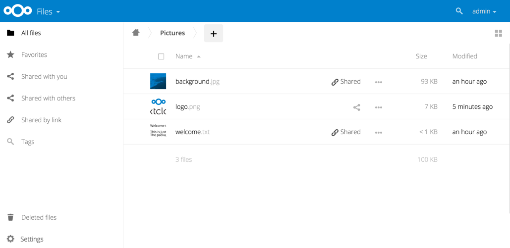

2015-2017 : Bac pro Systèmes Electronique et Numérique au lycée St-Jean à Colmar
Mai 2016 : Titularisation Sapeur-Pompier Volontaire
Décembre 2017 : Obtention Permis de conduire (Permis B)
Juillet 2018 : Obtention Bac Pro
Septembre 2019 : BTS Services Informatiques aux Organisations au CCI Campus à Strasbourg
Septembre 2019 : Début de ma formation dans l'entreprise PLDiffusion
2014-2015 : - Stage de trois semaines à l'école primaire St-Jean à Colmar : accueil et encadrement des élèves de CE1.
- Stage de trois semaines à l'école maternelle d'Artzenheim : accueil et aide à l'éveil des enfants de 1 ère et 2 ème année de maternelle.
- Stage d'une semaine au SDIS de Colmar : instructions théoriques, manœuvre, OS
2016-2017 : - Stage en entreprise au SAV à Cora Houssen : réparations de machines à laver, lave-linge, sèche-linge et réparations informatiques.
- Stage en entreprise chez PLDiffusion à Colmar : programme web C, C++, C#, HTML.
- Stage en entreprise chez Amplitub's : montages scènes 'sonorisation, lumières...).
Octobre 2018 - Juin 2019 : - Service Civique à l'école élémentaire Saint-Jean de Colmar.
Septembre 2019 : - Apprentissage en alternance au sein de l'entreprise PLDiffusion
Juillet 2017 : Classement de dossier chez Pôle Habitat à Colmar
Juillet - Août 2019 : Mise en rayson chez Intermarché à Colmar
Maîtrise du pack Microsoft Office
Maîtrise d'autres logiciels : SonyVegasPro, Photoshop
2012-2015 : Hand-Ball à Horbourg-Whir
Créations et montages de vidéos
Ecouter de la musique
Lecture
Nous avons le projet "Space_Crazy", se projet avait pour but l'apprentissage du C# depuis le logiciel Unity.
Ensuite, nous avons un shifumi uniquement codé en Python.
Puis nous avons la mise en place d'un serveur NextCloud dans le cadre d'un Projet Personnel Encadré.
